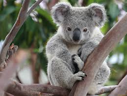

Коала
Коала (лат. Phascolarctos cinereus) — сумчастий, що живе виключно в Австралії і є єдиним представником свого виду.

Ці ссавці ведуть не надто рухливий спосіб життя. Більшу частину свого часу вони сидять на гілках своїх улюблених евкаліптів, розмірено жуючи його листя. Але цього часу не так вже й багато, оскільки 20 годин на добу коали просто сплять.
В даному випадку розглянемо дане сімейство на прикладі виду Коала сірий
- Вид: Коала сірий
- Клас: Ссавці
- Тип: Хордові
- Тривалість життя: 13 – 18 років (у природних умовах)
- Маса: 4 – 15 кг (дорослі особини)
- Довжина: 60 – 85 см (дорослі особини)
Сайт з більш поширенішою інформацією